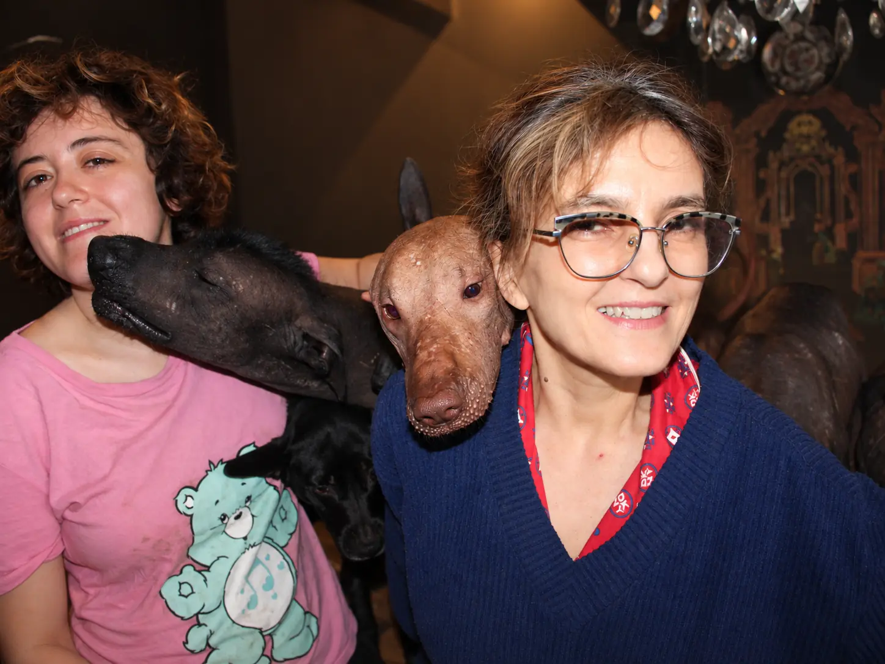
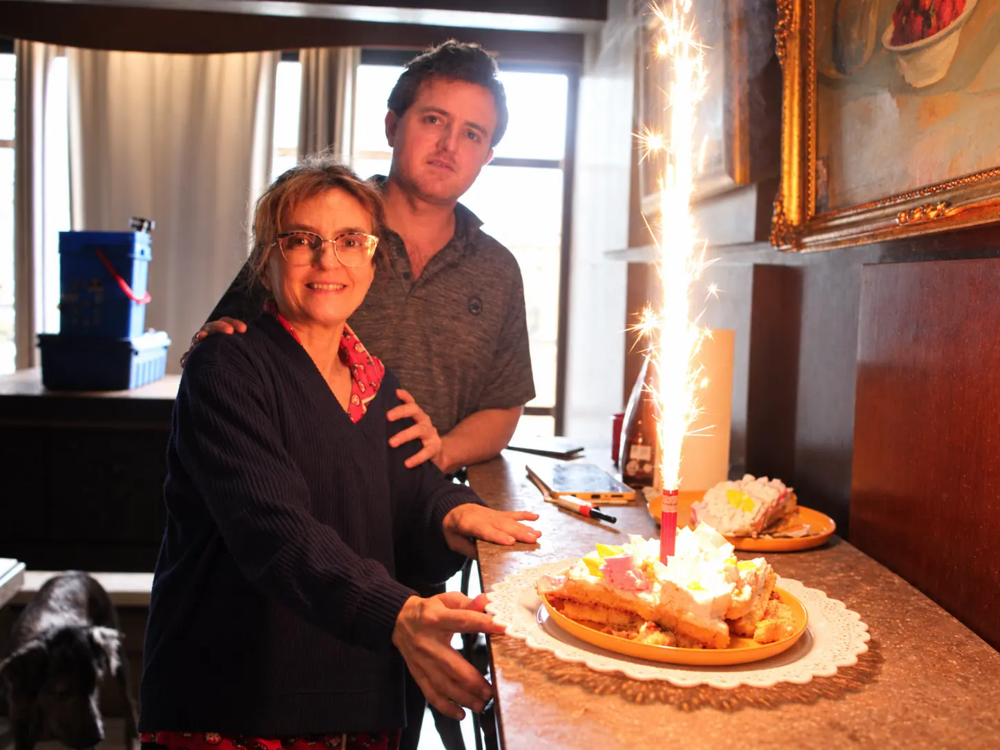
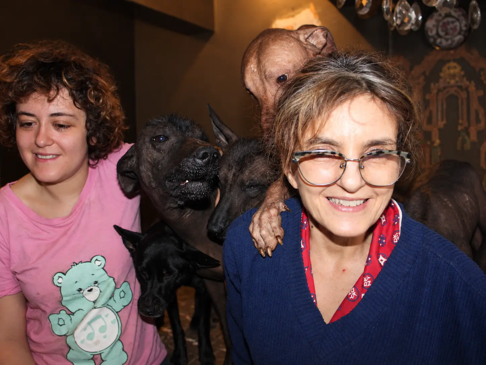

Cultural chronicle · Family · September 14, 2026
Marcela Turns 61: A Celebration Among Xoloitzcuintli, Family and Memory
A lit sparkler, a shared cake and a pack unwilling to remain outside the frame. Marcela Ramirez's birthday turned a family morning into a small archive about time, affection and everyday life with the Xoloitzcuintli.

In a home where Xoloitzcuintli are part of the daily rhythm, a birthday is never an exclusively human event. On September 14, 2026, Marcela turned 61. Alexandra, Fernando, a cake and a sparkler stood before the camera; around them, the pack found its way into the scene: a muzzle crossing the frame, a head resting near a face and a paw placed on a shoulder as though it, too, wanted to offer congratulations.
There was no prepared solemnity. There was the kind of disorder that makes a family photograph true. The dogs looked elsewhere, occupied the space and disrupted every attempt at a perfect pose. That is precisely why the images preserve something more valuable than impeccable composition: they show what it actually means to share a home with Xoloitzcuintli.
The Home Before the Archive
Marcela is part of the everyday gaze of Xolos Ramírez. Her photography and supervision help the family observe the dogs not as interchangeable figures, but as individuals—each with a posture, a character, a way of approaching and a distinct relationship with the people in the home. On her birthday, that relationship changed direction. For a few minutes, the Xolos seemed to surround her and make her the center of the portrait.
The sparkler added a column of light to the moment. The cake became part of the movement of hands and celebration. Fernando stood behind Marcela; Alexandra appeared among the dogs. Each element says something that would be incomplete on its own: not only who had a birthday, but which domestic community sustained that day.


The Xolo as a Companion in Everyday Life
The cultural dimension of the Xoloitzcuintli is often told through large symbols: Xólotl, the passage to Mictlán, ceramic figures and the breed's recovery as an emblem of modern Mexico. This history is essential, but it remains incomplete if ordinary life is forgotten. Mexico's Ministry of Culture notes that dogs were not only figures in ancient cosmology; they were also companions in daily life who formed close relationships with people.
Mexico's National Museum of Anthropology has described native Mexican dogs as traveling companions and part of the country's biocultural heritage. Their companionship reaches the stories about death, but also guardianship, friendship, support and comfort during life. The birthday scene needs no reenacted myth to reveal that continuity. It is enough to see how naturally the Xolos occupy the family's space.
Three Photographs to Name a Bond
Three compositions were selected from the celebration. The first presents Marcela as guardian of the pack; the second preserves the sparkler's light and the family embrace; the third centers on the Xolo's paw resting on her shoulder. The pieces were created from family photographs through AI-assisted digital editing. Their descriptions disclose that provenance: documentation also requires distinguishing the captured moment from the intervention applied afterward.
The images circulated first as a celebration. Beginning at 10:30 a.m., they appeared on official Xolos Ramírez accounts. Instagram received a carousel and a Reel; X received a photographic post and the video within the same thread; YouTube received the complete 26-second record; and Facebook received a multimedia post. The journey allowed the event to leave the house without losing its family center.
From a Family Album to Three NFT1 Records
After their social publication, the three images were minted as NFT1 Child SLP type 65 tokens within xolosArmy Community. Each transaction links one piece to its title and description. The record does not replace the original photograph, the memories of those present or the cultural narrative that gives the group meaning. It preserves another layer: the public existence of a specific edition and its inclusion in a community collection.
- 1. Marcela 61 — Guardian of the Pack.
View transaction 4b5f8e0d…e611e144 - 2. Marcela 61 — The Light of the Celebration.
View transaction 5434804f…b6859549e4 - 3. Marcela 61 — The Pack's Embrace.
View transaction d2e66260…beda85988d6
What a Chain Can Record—and What It Cannot
A transaction can establish identifiers, relationships among tokens and metadata. By itself, it cannot demonstrate the emotion of a morning or explain why a paw on a shoulder made the people in the room laugh. Technology records a trace; the chronicle preserves context. Together they can make an archive more legible, as long as neither claims to replace the other.
This distinction matters to Xolos Ramírez. A digital record does not replace a pedigree, a health record, an original photograph or a family's word. Nor does it automatically turn an image into truth. Its value emerges when provenance is disclosed, documents maintain distinct roles and the story remains connected to the people and animals that created it.
Sixty-One Years, Measured in Companionship
Birthdays organize time through a number. Yet we rarely remember a celebration for its number alone. We remember who stood nearby, how the light entered, what happened before the candle went out and which unexpected gesture made everyone look.
On Marcela's 61st birthday, that gesture came from the pack. Xoloitzcuintli—recognized for centuries as companions on human journeys—appeared here in the most immediate journey of all: sharing a home, caring for a family and accompanying one year into the next.
The photograph preserved the instant. Social networks allowed it to be shared. The NFTs added a public reference. This chronicle returns every layer to its point of origin: a simple celebration around Marcela, with the family and the Xolos—fortunately—refusing to remain outside the frame.